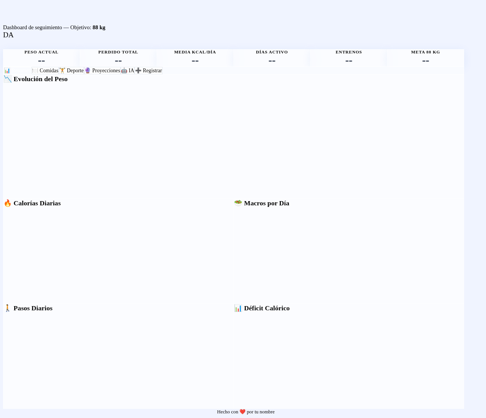

Tu sistema completo de seguimiento de dieta con dashboard interactivo y coach IA. Abre, registra tu peso y empieza a trackear. Sin apps, sin suscripciones, sin depender de terceros.
🚀 Abrir Dashboard
Registra tu peso y mira la evolución con gráficas interactivas y proyecciones a tu objetivo.
Registra cada comida con kcal, proteínas, hidratos y grasas. La IA estima automáticamente.
Registra deporte con duración e intensidad. La IA estima las kcal quemadas.
Pregúntale al coach sobre tu progreso, nutrición o entrenamientos. Responde con tus datos reales.
¿Cuándo alcanzarás tu objetivo? 4 ritmos de pérdida calculados automáticamente.
Todo se sync a tu repo GitHub. Nunca pierdes nada, incluso si cambias de dispositivo.
Abre el dashboard, configura tu perfil en 2 minutos y empieza a trackear tu progreso.
🚀 Abrir Dashboard